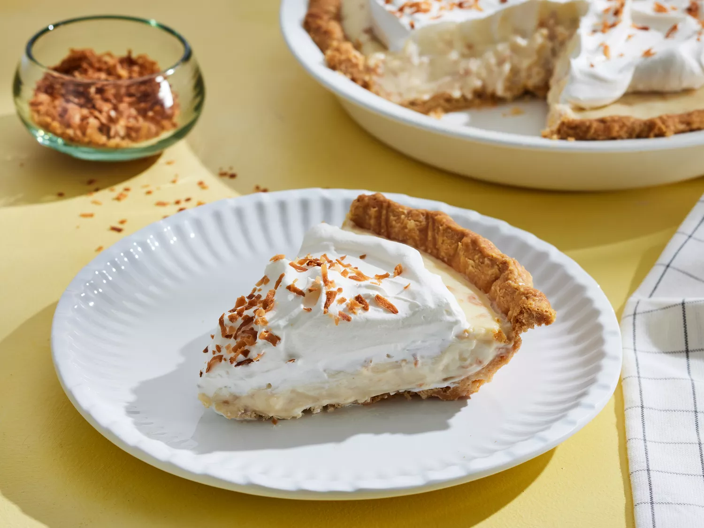

Coconut Pie Recipe
Ingredients

- Coconut shreds
- 1 can of evaporated milk
- Milk - you will fill up the empty evaporated milk can with this for measurement
- Vanilla or coconut pudding
- 3 egg yolks
- Butter
- Your favorite pie crust
Directions
- Prepare pie crust based on package instructions
- Put evaporated milk, other milk thing, and pudding into a pot
- Continuously stir until it is halfway there
- Pour some mixture into yolks while beating them (gradually)
- Pour back into pie filling and continuously stir until thick
- Add some butter
- Fill sink to level that filling is in the pot with cold water (not ice water), put pot into the sink.
- Add coconut shreds and stir in
- Once cool enough pour into pie crust and refriderate
- Add whipped cream and serve cold